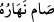
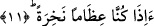
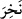
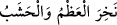

buradaki el-hâfira tâbirinden maksad, “yoldaki iz, çukur” anlamındadır.
Âyetteki el-hâfira kelimesini “kabul edenin fâile benzetilmesi” kabilinden
yorumlamak da mümkündür. Buna göre yolda yürüyüp iz bırakanla, üzerinde iz kalan
yoldan her biri diğerine benzetilmiş ve yol, yolda yürüyenin ismiyle anılmıştır. Tıpkı
zamanın, fâiline benzetilerek “
/onun gündüzü oruçludur” dediğimiz gibi. Nitekim
bu tâbirde orucu tutan gün değil fâildir. Zira burada oruç fiilinin zamanı, fâiline
benzetilmek sûretiyle bu tâbir kullanılmıştır.
Mücahid ve Halil b. Ahmed’in açıklamalarına göre el-hâfira, içinde kabirlerin
kazıldığı yeryüzü parçasının adıdır. Bundan dolayı et-Te’vilatu’n-Necmiyye’de bu âyet-
i kerime tefsir olunurken şöyle denilmektedir: Öldükten sonra cesedlerimizin
çukurlarında ve vücud kabirlerinde geri mi döndürüleceğiz.
11. (Hem de) çürümüş kemikler olduktan sonra mı? derler.
Çürümüş, dağılmış kemikler hâline geldikten -hem de onlar hayattan en uzak nesneler
iken- ilk hâlimize, hayatımıza mı döndürüleceğiz? Bu son cümle, yukarda ifâde edilen,
öldükten sonra dirilişi inkârı ve bunun olmayacağını pekiştirme ifâdesidir. Bu
pekiştirme, dirilişi buna aykırı olan bir duruma nisbet ederek sağlanmaktadır. Kâfirler
zannediyorlar ki bedenin bozulması ve vücudun parçalara ayrılıp dağılması aynı
zamanda gerçek insanın fesada uğraması ve yok olması demektir, oysa gerçek böyle
değildir. Bir an için kabul edelim ki insan şu bedenden ibarettir ve insan şu özel
biçimdeki vücut heykelinden ibarettir. Yine de biz yok olan bir vücudun yeniden
yaratılmasının imkansız olduğunu kabul etmiyoruz. Çünkü Allah her mümkin şeyi
yaratmaya kadirdir. Allah Teâlâ insanın vücudunun yapı taşlarını yeniden toplamaya ve
bunlara yeniden hayat vermeye kadirdir. Çünkü o parçalar -yaratıkların ilminde ayrılmış
değiller ise de- Allah’ın ilminde ayrılmıştır. Tıpkı süte katılmış su örneğinde olduğu
gibi. Bu örnekte süt ile su her ne kadar birbirine karışmış durumda ise de Allah’ın
ilminde birbirlerinden ayrıdırlar. Her ne kadar insan aklı bunu kavramaktan âciz ise
de...
Âyetteki “
/nahira” kelimesinin kökü olan “nahr”, çürümek demektir. Arapçada “
” denildiğinde “kemik ve tahta gevşeyip çürüdü, dokunulsa dağılacak
hale geldi” demek olur. “Nahira” ifâdesi “nâhira” kelimesinden daha anlamlıdır. Çünkü
ikincisi mubâlağa kiplerindendir. Veya bu kelime, sıfatın sâhibi olduğu kişide
değişmeğip sâbit kaldığına delalet eden bir kip olan sıfat-ı müşebbehedir. Bundan
dolayı âlimlerin ekserisi “nahira” ifâdesini tercih etmişlerdir. “Nâhira” kelimesi ise
âyet sonlarındaki ses uyumuna daha uygun olduğundan bazı âlimler de bunu tercih
etmişlerdir.